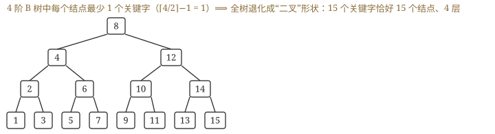
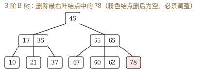
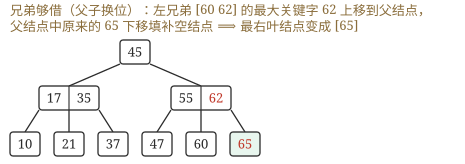

先答旧题
折半判定树高度？
线性探测的主要问题？
失败 ASL 除以什么？
前面的树都放在内存。数据放在磁盘时情况变了：内存访问是纳秒级，磁盘 I/O 是毫秒级，差十万倍。一次 I/O 读一块，所以让树尽量矮，一个结点正好占一块。这个思想后面文件系统和数据库索引还要再用。
其之壹m 阶 B 树的定义
m 阶 B 树（4 条关键规则）
孩子数上限：每个结点至多 m 棵子树，至多 m−1 个关键字。
孩子数下限：根至少 2 棵（除非它就是叶子，关键字至少 1 个）；其他非叶结点至少 ⌈m/2⌉ 棵子树，⌈m/2⌉−1 个关键字。
平衡：所有叶子在同一层（叶结点下面的「失败结点」不含信息）。
n 个关键字的失败结点数 = n+1。
一个结点长这样：n, P₀, K₁, P₁, K₂, …, Kₙ, Pₙ。关键字有序，P₀ 指向的子树都小于 K₁，P₁ 的子树在 K₁ 和 K₂ 之间，依此类推。查找时先在结点内找（顺序或折半），找不到就按范围进入子树；走到失败结点就是查不到。
下限的道理：防止树退化变高。根是例外，因为分裂时可能只有一个关键字。
关键字数与高度（从第 1 层算到最后一层有关键字的层）
高度 h 的 B 树关键字数最多 mʰ − 1。
最少：第 1 层 1 个关键字；第 2 层 2 个结点；第 3 层 2⌈m/2⌉ 个结点……除根外每个结点 ⌈m/2⌉−1 个关键字。合起来 n_min = 2⌈m/2⌉^(h−1) − 1。
算一遍：5 阶 B 树，高 3。最多 5³−1 = 124 个关键字；最少 ⌈5/2⌉ = 3，2×3²−1 = 17 个。
合上页面说一遍：m 阶 B 树每个结点的关键字范围？n 个关键字有多少失败结点？
根 1 到 m−1；非根 ⌈m/2⌉−1 到 m−1。n+1。
其之貳插入：满了就分裂
一定插在最底层的叶子（先走查找路径）。如果关键字数超过 m−1，取中间（第 ⌈m/2⌉ 个）关键字提到父亲，左右分裂。父亲也满了就继续上溢，一直到根，根分裂则树高 +1。B 树是从下往上长的，所以所有叶子总在同一层。
其之參删除：不够就借或并
先转化成删叶子（非叶结点用前驱或后继替换，和 BST 一样）。之后看这个叶子的关键字数：
| 情况 | 做法 |
|---|---|
| 删完还 ≥ ⌈m/2⌉−1 | 直接删 |
| 不够，兄弟多余（> ⌈m/2⌉−1） | 向兄弟借：父亲下来一个，兄弟上去一个 |
| 不够，兄弟也不够 | 和兄弟合并，把父亲那个关键字一起拉下来；父亲也不够就继续处理 |
走一遍（5 阶，非根至少 2 个）：结点 [20, 40]，父亲有分隔关键字 50，右兄弟 [60, 70, 80]。删 20 后只剩 [40]，不够。右兄弟 3 个有多余：父亲的 50 下来，兄弟的 60 上去，变成 [40, 50]、[70, 80]、父亲放 60。如果右兄弟也只有 2 个，就把 40、50 和它合并，父亲少一个关键字，可能继续往上。
合上页面说一遍：插入溢出和删除下溢分别怎么处理？
插入：中间关键字上提，结点分裂。删除：兄弟够就借（父亲下来、兄弟上去）；不够就合并（父亲下来）。
其之肆B⁺ 树
B 树的结点里还存着数据，一块放不下多少关键字，树就不够矮。而且 B 树不便顺序读取。B⁺ 树把数据全挪到叶子，非叶结点只放索引，一块能放更多指针，树更矮。叶子用指针串起来，可以按序往后读。所以 B⁺ 树既支持从根开始的随机查找，也支持沿叶子链的顺序查找。
B 树 vs B⁺ 树
| 项目 | B 树 | B⁺ 树 |
|---|---|---|
| n 个关键字的结点 | n+1 棵子树 | n 棵子树 |
| 关键字位置 | 所有结点都有信息 | 信息全在叶子，非叶只是索引 |
| 关键字是否重复 | 不重复 | 叶子包含全部关键字 |
| 查找 | 可能在中途成功 | 必须走到叶子 |
| 叶子 | 无链 | 叶子之间有指针串起来 |
| 支持 | 只支持随机查找 | 随机 + 顺序 |
书的目录
B⁺ 树像一本书：非叶结点是目录，叶子是正文，正文页码连续，所以既能查目录跳到某页，也能一页页往后读。比方的局限：目录层可以有好几层，每层都是一次磁盘读。
领域展开
m 阶：至多 m−1 个关键字；非根至少 ⌈m/2⌉−1 个。
插入：满了分裂，中间上提。删除：先借后并，父亲下来。
B⁺：信息在叶子，叶子串成链，支持顺序。
其之伍实战
📌 一般来说，对于某个具体的 B 树图形，并不能确定它是几阶 B 树。对 5 阶 B 树，不要误认为"必须存在至少一个结点的关键字达到 4"，因为 5 阶 B 树各结点的关键字个数最少为 ⌈5/2⌉−1 = 2、最多为 4，全都取 2 也满足要求。
再深一层
高度 2 的 5 阶 B 树，最瘦长这样：
第 1 层（根）：1 个结点，最少 1 个关键字 ⟹ 2 棵子树
第 2 层 ：2 个结点，每个最少 ⌈5/2⌉−1 = 2 个关键字
合计 1 + 2 + 2 = 5
[ a ]
/ \
[b c] [d e] ← 一棵合法的 5 阶 B 树，只有 5 个关键字📌 本题与第 20 题（2018，高度 5 的 3 阶 B 树至少 31 个）是同一个模板的两次考查：逐层写"结点数 × 每结点最少关键字数"再累加。3 阶时每结点最少 1 个、分支最少 2 ⟹ 满二叉；5 阶时每结点最少 2 个、分支最少 3。📌 书上那个注释框才是本题最值钱的东西："5 阶"是容量上限，不是必须用满。这条直接支撑第 1 题（一张图定不出唯一的阶）与第 17 题（2014，为了结点最多，让每个结点只装 1 个关键字）。
⚠️ 选项 D（14）是"按最多算"的落点（5 阶高度 2 最多 5²−1 = 24，14 则是别的凑数）；选项 B、C 多半来自"忘了根只要 1 个关键字"——若误把根也按 2 个算，就得 2+2+2 = 6，再算错一步就到 7、8。"根的特权"在本章至少值三道题。
再深一层
m = 3 ⟹ 每结点关键字数区间 [⌈3/2⌉−1, 3−1] = [1, 2] 最瘦：每结点 1 个关键字、2 棵子树 第 1 层 1 个 + 第 2 层 2 个 + 第 3 层 4 个 + 第 4 层 8 个 + 第 5 层 16 个 = 31 个结点 × 1 个关键字 = 31 个关键字 = 2⁵ − 1 四个选项的来历（全是常见错法）： A 15 = 2⁴−1 少算一层（把高度 5 当成 4 层） B 31 = 2⁵−1 ✔ 正解 C 62 = 2×(2⁵−1) 误按"每结点 2 个关键字"算（那是最多不是最少） D 242 = 3⁵−1 误用"装满"公式 m^h−1，问的却是最少📌 “最少"与"最多"两条公式站在天平两端，代入前先在草稿上写一个字：少 ⟹ 每结点 ⌈m/2⌉−1 个、分支 ⌈m/2⌉ 个；多 ⟹ 每结点 m−1 个、分支 m 个（总量 m^h−1）。选项 D 就是给"公式背混了"的人准备的。
📌 与第 6 题合起来看，这两题其实是同一棵树的两种问法：高度 5 的 3 阶 B 树最瘦时，结点数 31、关键字数也是 31（因为每结点恰好 1 个关键字）。3 阶下这两个数字重合，是个方便的巧合，但换成 5 阶就会分道扬镳（结点数 n 对应关键字数 2n 左右）。
⚠️ 层数从 1 开始数，根算第 1 层；高度 5 就是 5 层关键字层（外部失败结点层不算）。选项 A 正是"数成 4 层"的落点。

再深一层
4 阶 B 树的关键字数区间：非根结点 ⌈4/2⌉−1 = 1 ~ 3，根也是 1 ~ 3
⟹ 每个结点都只装 1 个关键字是合法的 ⟹ 结点数可以等于关键字数 = 15
⟹ 此时每个结点 2 棵子树，整棵树的形状与一棵满二叉树完全一样：
1 + 2 + 4 + 8 = 15 个结点，4 层，终端结点全在第 4 层 ✔ 叶同层
反向的问法（本章第 6 题）：结点最少 ⟺ 每结点塞满 3 个 ⟹ ⌈15/3⌉ = 5 个结点📌 “4 阶 B 树可以长得像二叉树”这件事很反直觉，但完全合法——因为 4 阶的下限 ⌈4/2⌉ = 2 棵子树恰好就是二叉。3 阶、4 阶都有这个性质（下限都是 2 棵子树），5 阶起就不行了（下限 3 棵）。📌 秒答口诀：问结点最多就把关键字摊薄，问结点最少就把关键字堆满。本题、第 6 题、第 22 题（2021）三道题全靠这一句——2021 那题更进一步：连"第 2 层的 4 个关键字"都要摊到尽量多的结点里去。
⚠️ 选项 A（5）正是"结点最少"的答案——出题人把反向答案摆在第一个选项，读题时"最多／最少"四个字要圈出来。
⚠️ 别忘了验一遍"叶结点同层"：摊薄之后必须还能凑成一棵每层填齐的树才算数。15 = 1+2+4+8 恰好是满二叉的层数和，运气好；若给的是 14 个关键字，就凑不出满二叉，最多结点数要另算。


再深一层
删 78 前：父 [55 65]，三个孩子 [47] [60 62] [78]
① 78 删掉 ⟹ 该结点关键字数 0 < 下限 ⌈3/2⌉−1 = 1，亏空
② 右兄弟没有；左兄弟 [60 62] 有 2 个 ≥ ⌈3/2⌉ = 2 ⟹ 够借
③ 父子换位（走两步，别只走一步）：
左兄弟的最大关键字 62 ↑ 上移到父结点
父结点中原来夹在中间的 65 ↓ 下移到空结点
④ 结果：父 [55 62]，孩子 [47] [60] [65] ⟹ 最右叶结点 = [65]📌 为什么必须"父子换位"而不能直接搬兄弟的 62 过来：B 树要求"父结点的关键字必须夹在左右子树之间"。若把 62 直接放进右边的空结点，就出现 62 在父结点 65 的右子树里却小于 65 —— 直接违反区间约束。让 62 顶替父位、让 65 落到右边，区间关系才成立。📌 一句口诀：借兄弟要"转一手"——兄弟的极值上位当父，老父下岗去填坑。借左兄弟就取它的最大值，借右兄弟就取它的最小值（第 23 题 2022 真题、综合 02 第 4 步都是这一招）。
⚠️ 选项 B（60, 62）是"以为不用调整、直接把左兄弟整个当最右叶"的落点；选项 A（60）是只走了"62 上移"没走"65 下移"——那样父结点会变成 [55 62]、孩子却是 [47] [60] [空]，空结点仍然违规。
⚠️ 3 阶 B 树的下限只有 1 个关键字，所以"删一个就亏空"发生得极频繁——3 阶题目几乎每删必调整，做题时删完先数一遍关键字个数。
再深一层
逐项判"共有还是独有"： A 支持顺序查找 B+树 ✔ / B 树 ✘ ⟹ 独有，选它 B 结点中含关键字 B+树 ✔ / B 树 ✔ ⟹ 共有（B+树非叶结点里放的是副本，但确实"含有"） C 根至少两个分支 B+树 ✔ / B 树 ✔ ⟹ 共有（两者的根都是"非叶时至少 2 棵子树"） D 叶结点同层 B+树 ✔ / B 树 ✔ ⟹ 共有，这正是两者都"平衡"的方式📌 与 2009 真题（第 14 题）配对记：2009 问"哪条不符合 B 树定义"，答案是"叶结点之间用指针链接"；2016 问"B+树独有什么"，答案是"能顺序查找"——两题指的是同一条性质：叶链。有链 ⟹ 能顺序查找。
📌 “做差异题先做减法"：把四个选项挨个问一句"B 树有没有"，凡是 B 树也有的一律划掉。本题划掉三个就剩答案，不需要真的理解顺序查找的机制。
⚠️ D 是最容易误选的：很多人只记得"B+树所有叶结点在同一层且串成链"，看到"都在同一层"就点了下去。但 B 树的定义第 5 条同样要求所有叶结点在同一层——这是 B 树平衡性的定义本身，不是 B+树的专利。
再深一层
四个场景逐个判"数据在哪、要不要范围查询"： A 词法分析 —— 在内存，用有穷自动机(DFA)/语法树，跟磁盘无关 ✘ B 数据库索引 —— 数据在磁盘、量极大、要范围查询与稳定的响应时间 ✔ C 路由表查找 —— 要求纳秒级、在硬件/高速缓存里做最长前缀匹配（Trie） ✘ D 磁盘空闲块 —— 只需"要一块给一块"，位图或空闲链表就够，不需要有序索引 ✘📌 B+树三大卖点，正好对上数据库索引的三大需求：① 非叶结点只存索引 ⟹ 一个盘块能塞下更多关键字 ⟹ 树更矮 ⟹ I/O 更少；② 叶结点串成链 ⟹ 范围查询 / ORDER BY 一次扫描；③ 每次查找都走到叶 ⟹ 响应时间稳定可预测（第 13 题 D）。MySQL 的 InnoDB 索引就是 B+树，这条冷知识值得记，因为它把三个卖点串成一句话。
📌 “更适合"而非"只能"：B 树同样可以做文件索引（第 12 题 D 项是对的），只是 B+树更省 I/O。做单选题时按"更适合"取。
⚠️ 选项 C 是最有迷惑力的：路由表确实要"快速查找"，但路由查找是"最长前缀匹配"而不是精确/范围匹配，且必须在纳秒级完成、数据常驻高速缓存 —— 用不着为磁盘 I/O 设计的 B+树。看到"网络/路由"要立刻想到 Trie 与硬件查找表。
再深一层
四项逐条对照 B 树定义：
A 根至多 m 棵子树 ✔ 定义第 1 条（每个结点至多 m 棵子树）
B 所有叶结点在同一层 ✔ 定义第 5 条，B 树"平衡"就是靠这一句
C 结点内关键字有序 ✔ 定义第 4 条 K₁ < K₂ < … < Kₙ
（"或降序"也放行：整棵树反向定义即可，不影响 B 树的本质）
D 叶结点之间指针链接 ✘ 这是 B+树第 4 条：叶结点按关键字顺序链接📌 B 树 vs B+树的五条差异，记牢第 5 条就够对付本题与 2016 真题：①n 个关键字 n+1 / n 棵子树 ②关键字数区间差 1 ③关键字是否重复出现 ④非叶结点是否只当索引 ⑤叶结点有没有链。📌 C 项的"或降序"不是破绽：B 树只要求结点内单调有序、且子树区间与之对应，整棵树统一按降序组织同样是一棵合法的 B 树（就像折半查找对降序表照样能做，见 7.2）。408 出选项时常混一个"看起来别扭但其实没错"的干扰项，别被它勾走。
⚠️ 2009 与 2016（第 18 题）是一对镜像题：2009 问"B 树不该有什么"、2016 问"B+树独有什么"，答案指向同一条性质。两题一起背，等于白拿一分。
做完再翻：这些题到底在问什么
关键字数范围：高度和阶数一给，最多 mʰ−1、最少 2⌈m/2⌉^(h−1)−1 直接套。 结点数要最多：每个结点放最少的关键字。 删除题：画出来，判断借还是并。 B⁺ 树的特点题都在问叶子链和顺序查找。